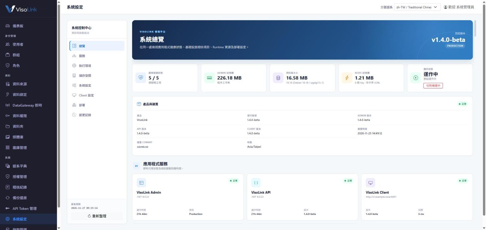
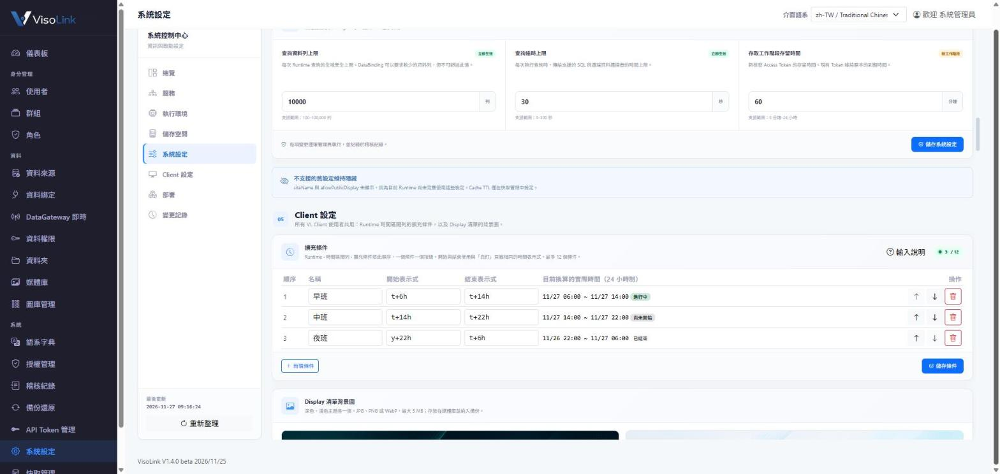
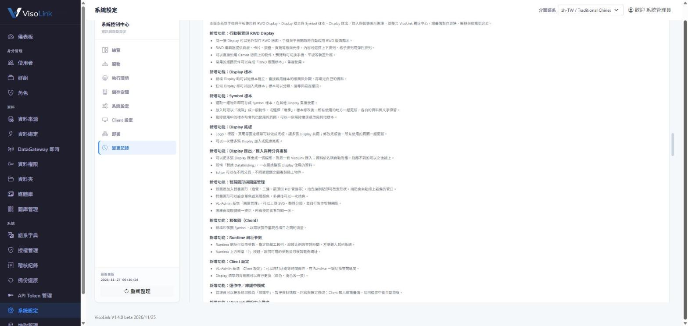
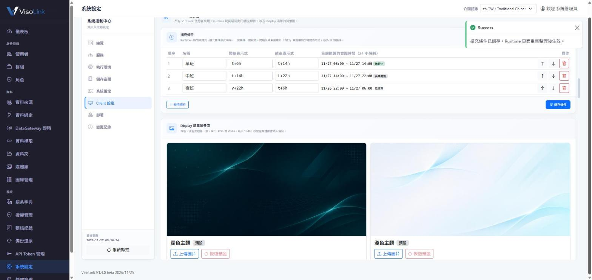

System Settings 系統設定
集中檢視服務健康度、執行環境與儲存狀態，並由授權管理者調整系統執行限制。
查看系統總覽

先確認狀態查看是否有異常或資源警示
進入對應區服務、執行環境或儲存
記錄影響時間、功能範圍與使用者影響
- 開啟「系統 → 系統設定」。
- 查看健康狀態、資源摘要與警示。
- 有異常時依服務、執行環境及儲存章節逐層確認。
已判斷系統是否健康，並知道異常屬於哪一個服務或資源範圍。
對外回報以狀態與影響為主，不抄錄內部位址、路徑或部署值。
查看應用服務狀態
- 狀態
- 確認服務為正常、需注意或無法使用。
- 回應時間
- 比較平時基準，持續升高時記錄時間點。
- 影響範圍
- 確認影響 Admin、API、Client、資料或 Cache 相關功能。
- 切換至「服務」。
- 確認每個應用服務是否正常，以及回應時間是否異常。
- 若有服務失效，記錄發生時間、服務名稱與前台影響後交由維運人員處理。
已取得異常服務名稱、狀態、回應時間與可觀察的前台影響。
查看執行環境
查看資源CPU、記憶體與運行狀態
比較限制確認是否接近可用上限
交付維運只提供必要狀態資訊
- 切換至「執行環境」。
- 確認運行狀態與資源是否接近限制。
- 記錄異常時間與趨勢，只將必要資訊提供給具維運權限的人員。
能區分服務功能異常與資源不足，並提供可追蹤的時間點。
查看儲存與持久化狀態
- 資料
- 確認主要資料儲存是否可用。
- 媒體
- 觀察媒體與縮圖的容量成長。
- 備份
- 確認備份空間與保存政策是否足夠。
- 切換至「儲存空間」。
- 查看資料、媒體與備份等儲存狀態。
- 容量接近上限時先確認成長來源，再依保存政策安排清理或擴充。
不要直接刪除系統儲存位置中的檔案；應由對應管理功能及維運程序處理。
管理系統執行限制

記錄原值保留可還原的設定基準
小幅調整依量測結果修改限制
Runtime 驗證以代表性圖面確認效果
- 切換至「系統設定」。
- 閱讀各限制項目的用途、單位及允許範圍。
- 記錄原值並評估對 Runtime 與使用者的影響。
- 調整後儲存，依提示確認是否立即生效。
- 以代表性圖面驗證監看及分析操作。
設定已儲存，代表性 Runtime 操作正常，且保留原值可供回復。
提高限制可能增加服務負荷；變更前應有量測基準與還原值。
查看部署資訊
- 切換至「部署」。
- 以唯讀方式確認目前環境與設定是否完整。
- 排障時只記錄必要狀態，不將實際環境值放入對外文件。
此頁用於授權管理者與維運人員判讀；操作手冊不公開元件版本、主機位址、路徑或連線設定。
查看產品更新紀錄

- 切換至「變更記錄」。
- 依版本與日期查看功能、修正及注意事項。
- 升級前確認與日常操作、權限及資料行為相關的變更。
已辨識本次更新會影響的功能、操作人員及需重新驗收的流程。
設定 Client 擴充條件與清單背景
「Client 設定」是所有 VL Client 共用的設定：Runtime 時間區間列的擴充條件（例如班別），以及 Display 清單的背景圖。

- 在系統設定左側點「Client 設定」。
- 「擴充條件」點「新增條件」，輸入名稱、開始表示式與結束表示式（例如早班
t+6h到t+14h、夜班y+22h到t+6h）；最多 12 條。 - 點右上「輸入說明」可查看時間表示式寫法：
*現在、t今天 00:00、y昨天 00:00，搭配s m h d w mo y單位加減。 - 用上移／下移調整按鈕順序，確認換算時間正確後點「儲存條件」。
- 「Display 清單背景圖」：在深色或淺色主題點「上傳圖片」（JPG、PNG 或 WebP，最大 5 MB）；要回到原圖點「恢復預設」。
畫面顯示「擴充條件已儲存，Runtime 頁面重新整理後生效。」Runtime 時間區間的「擴充條件」頁籤出現對應按鈕，一鍵切換查詢區間（見 班別一鍵切換）。背景圖存放在媒體庫並納入備份。
切換運作中／維護中
升級、搬移或大量資料作業前，管理者可以把系統切換為「維護中」，暫停資料讀取、回寫與設定修改；切回運作中後自動恢復。
- 在系統設定總覽的「運作狀態」卡片點「切到維護中」。
- 閱讀確認視窗「切到維護中？」：維護中會暫停讀取資料（Runtime 查詢與即時資料）、回寫、編輯 Display 與所有設定修改；Client 會在 30 秒內顯示維護畫面。
- 確認後，Admin 每頁上方顯示「系統維護中」橫幅，設定只能查看。
- 維護完成後點「切回運作中」並確認；Client 會在 30 秒內自動回到原畫面，不需要重新登入。
| 維護中 | 內容 |
|---|---|
| 暫停 | Runtime 查詢與即時資料、回寫、編輯 Display、所有設定修改。 |
| 仍可使用 | Admin 登入、查看狀態、切換總開關、備份與還原（包括 Backup API Token 呼叫）。 |
| Client 畫面 | 顯示「系統維護中」：目前暫停讀取資料、回寫與編輯，維護結束後會自動回到原本的畫面；每 30 秒確認一次。 |
卡片會記錄最後一次由誰在何時切換。勾選「同時允許讀取與切換運作狀態」的 Backup API Token，也可以由備份中心在排程備份時自動切換。